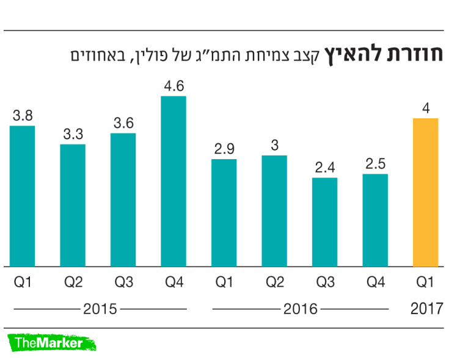
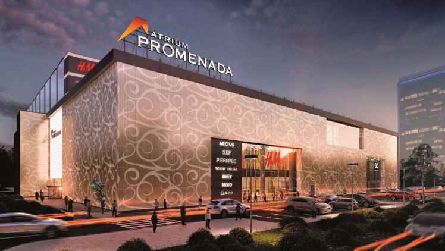

מאות מיליוני שקלים מחסכונות הפנסיה של הציבור בישראל נקברו בשוק הנדל"ן המזרח אירופי לאחר המשבר הגדול של 2008. תחזיות ורודות ותוכניות ענק שפיזרו כרישי נדל"ן למדינות כמו רומניה, בולגריה וסרביה, מונפו בהלוואות עצומות מהציבור, והתבררו בתוך זמן קצר כהשקעות גרועות מאוד. אלא שכמעט עשור לאחר הפיאסקו הגדול, הנדל"ניסטים הישראלים שוב רעבים להשקעות בשוק המזרח אירופי והפעם על הכוונת נמצאת בעיקר פולין.

הפעילות הישראלית בפולין הואצה משמעותית בשנים האחרונות. חלק מהחברות הישראליות פועלות בתחום הייזום או הבנייה למגורים ובהן הכשרת הישוב, קבוצת לוזון (48.2 +0%) ואפריקה נכסים (8,312-0.38%) , שבונות אלפי יח"ד ברחבי המדינה. חברות אחרות פועלות בתחום הנדל"ן המסחרי כלומר קניונים, מרכזים לוגיסטיים ומשרדים. בקבוצה זו נכללות חברות כמו אטריום מקבוצת גזית גלוב (3,314 -0.78%) (קניונים ,MLP) של הכשרת הישוב (3,466 -1.03%) (מרכזים לוגיסטיים), ואדגר מקבוצת ביטוח ישיר (4,179 +0.82%) (משרדים.)
אחת החברות הישראליות הגדולות הפעילות בפולין היא קבוצת לוזון (לשעבר קבוצת דורי), הפועלת במדינה באמצעות החברה הבת (66%) רונסון. בתחילת 2017 חתמה לוזון על הסכם לרכישת קרקע בוורשה, המיועדת לבנייה של כ–1,600 יחידות דיור, בסך של 82 מיליון זלוטי ( שווה בקירוב לשקל).
הפרויקט החדש הצטרף לשמונה פרויקטים של רונסון הנמצאים בהליכי הקמה, ולעשרה פרויקטים שבנייתם הסתיימה ושמכירתם ממשיכה, וכן לצבר קרקעות ופרויקטים בפולין שעליו צפויות להיבנות 5,931 יח"ד.
"כשהגעתי לדורי, חשבתי שאמכור את רונסון אחרי שלמדתי את המספרים החלטתי דווקא להרחיב את הפעילות", סיפר בעל השליטה עמוס לוזון. "לנו, הישראלים, יש קונוטציות שליליות על פולין בגלל השואה. כשהגעתי לשם, ראיתי שוורשה היא העיר מערבית לגמרי, שלטעמי לא נופלת מברלין. הבנתי את הפוטנציאל. ראיתי שרונסון מוכרת 1,000 דירות בשנה. בישראל אין לנו אף חברה יזמית שמוכרת במספרים כאלה. המדינה מתפתחת מאוד, יש ביקוש גדול לדירות, קטנות יחסית, של כ–50 מ"ר. המחיר של דירה כזו הוא 350–450 אלף שקל, וצריך להביא רק הון העצמי של 15%–20%. התשואה על שכירות היא 5%–6%. בארץ אין מספרים כאלה".
קצת אחריה אפריקה נכסים, מקבוצת אפריקה ישראל, השלימה ב–2017 רכישת קרקע בוורשה ב–23.3 מיליון זלוטי. על הקרקע החברה מתכננת להקים פרויקט מגורים בשטח של 6,000 מ"ר. כבר כיום החברה מעורבת בשני פרויקטים למגורים בעיר קרקוב (420 יח"ד), שמכירתן כמעט הושלמה במלואה, ובשנה הקרובה היא אף מתכננת להתחיל בהקמה של אפי פארק קרקוב פולין (פרויקט משרדים), עם שטחים להשכרה בהיקף של 24 אלף מ"ר.
שחקנית ישראלית ותיקה נוספת בפולין היא הכשרת הישוב. החברה כבר הספיקה למכור בשנים האחרונות 1,350 יח"ד בשני פרויקטים בערים גדנסק וורשה, שהניבו הכנסות של יותר מ–600 מיליון זלוטי, ורווח של 120 מיליון זלוטי; וזאת בנוסף לשלושה פרויקטים (750 יח"ד) הנמצאים בשלבי ייזום מתקדמים. תומר כץ, סמנכ"ל השקעות ופיתוח עסקי בהכשרת הישוב, הסביר כי העמקת הפעילות בפולין מצד החברה נובעת משיעורי הרווחיות הגבוהים בהשוואה למדינות במערב אירופה ובישראל. "בשל שיעורי הרווחיות הגבוהים, ביחד עם יציבות המדינה, המשתקפת בנתונים המקרו כלכליים ומערכת הבנקאות המסודרת, פולין הופכת לשוק עם המון פוטנציאל", אמר.
בנוסף לפעילות הייזום למגורים, הכשרת הישוב מחזיקה ב–11 פארקים לוגיסטיים לתעשייה בשטח כולל של כ–2.7 מיליון מ"ר ובתפוסה של 98%, באמצעות החברה הבת MLP. כץ הסביר שהצמיחה בתחום המרכזים הלוגיסטיים קשורה למיקום האסטרטגי של פולין. לדבריו, "פולין ממוקמת ליד גרמניה, ויש לה עם כוח עבודה זול יחסית למערב אירופה. זה איפשר להעביר מפעלים ותעשיות ממערב אירופה לפולין".
ההתעניינות המחודשת של הישראלים בפולין קשורה גם לשיפור בסביבה הכלכלית. הכלכלה הפולנית, שהיא השמינית בגודלה באיחוד האירופי, צמחה ברבעון הראשון של 2017 בכ–4%, הקצב הגבוה מאז הרבעון האחרון של 2015. המדינה שמרה בכל השנים האחרונות על שיעורי צמיחה של 2.5%–4.5%, ולפי הערכות היא תצמח השנה בכ–3.5%. התוצר לנפש (GDP) עלה מרמה של 24.4 אלף דולר ב–2014 לרמה של 27.7 אלף דולר ב–2016 — כלומר, צמיחה של 5%–8% בשנה.
הצמיחה בפולין נתמכת בהגירה חיובית ממדינות מזרח אירופה כמו אוקראינה ורומניה, ובהגירה הפנימית לערים הגדולות. ההגירה החיובית מקזזת את שיעור הילודה הנמוך במדינה, שאוכלוסייתה מונה יותר מ–40 מיליון איש, וזאת כששיעור האבטלה ממשיך להיות נמוך כ–5.3% בלבד.
על רקע ההגירה החיובית והצמיחה במשק, 2016 הייתה שנת שיא בענף המגורים: במהלך השנה הוצאו למכירה בששת הערים הגדולות בפולין כ-65 אלף דירות חדשות, כ-25% יותר מאשר בתקופה המקבילה אשתקד, ונמכרו 20% יותר דירות מאשר ב-2015.
החוסן הכלכלי בא לידי ביטוי בתשואות האג"ח של ממשלת פולין, שמדורגות ברמה של BBB פלוס על ידי S&P. אג"ח של ממשלת פולין לעשר שנים נסחרת בתשואה לפדיון של 3.3% אחוז בלבד מעל אג"ח דומה של ממשלת ארה"ב. גם המטבע המקומי, הזלוטי, ממשיך להפגין עוצמה: מתחילת 2017 נחלש הדולר מול הזלוטי ב–15%, כך שעבור דולר אחד ניתן לקבל כיום 3.6 זלוטי.
מרכזים מסחריים - ותעשייה
הפריחה הנדל"נית בפולין אינה רק בתחום המגורים, אלא גם בתחום הנדל"ן המסחרי. השחקנית הישראלית המרכזית שפועלת בתחום היא חברת הנדל"ן אטריום מקבוצת גזית גלוב. אטריום ביצעה בשנים האחרונות מסע רכישות בפולין בסכום מצטבר של 750 מיליון יורו. כיום, החברה כבר מחזיקה ב–21 קניונים, בשטח של יותר מ–520 אלף מ"ר ובשווי של יותר מ–1.5 מיליארד יורו.
ליעד ברזילי, מנכ"ל אטריום: "יש פה 40 מיליון איש שאוהבים לעבוד"שרון כהן חברה ישראלית שנייה שהייתה מעורבת עד לאחרונה בתחום המרכזים המסחריים בפולין היא פלאזה סנטרס, שבשליטת אלביט הדמיה. פלאזה, שהיא חברה מסובכת שעברה הסדר חוב, מימשה באחרונה שני קניונים שהיו בבעלותה (קניון סובלאקי וקניון טורון פלאזה). המימושים נעשו במחירים נוחים של 42.3 מיליון יורו וכ–70 מיליון יורו בהתאמה. חברה ישראלית אחרת המעורבת בתחום הנדל"ן המניב היא אדגר מקבוצת ביטוח ישיר שמחזיקה בשישה בניינים משרדים במדינה בשווי של כמיליארד זלוטי.
לדברי ליעד ברזילי, מנכ"ל אטריום, "פולין זו מדינה מפותחת ומאוד מתקדמת, שיחסית קל לעשות בה עסקים. שוק הנדל"ן חזק מאוד. יש שחקנים בינלאומיים מכל המדינות ומכל הסוגים החל בקרנות הפנסיה גרמניות, האיטלקיות ואמריקאיות וכלה במשקיעים מהמזרח. השוק מאוד דינמי ומאוד חי. אנחנו רואים נתונים טובים של צמיחה, ותנופה בתחום הקניונים. לאנשים במדינה יש תרבות צריכה שמזכירה את התרבות הישראלית.
"רבעון אחר רבעון פולין מציגה צמיחה מתמשכת. יש פה 40 מיליון איש שאוהבים לעבוד, הם פתוחים ובעלי השכלה. המדינה נתמכת על ידי האיחוד האירופי, ושיפרה את התשתיות. השוק נחשב כמעט למערב אירופה, אך מאפשר להשקיע במדינה צומחת. הגופים הבינלאומיים כבר כאן כמה שנים טובות. אני מאוד מאמין בשוק הזה, כך שהוא ימשיך להיות שוק מרכזי של אטריום", הוסיף. ברזילי ציין שאטריום מתכננת להמשיך להשקיע כ–300 מיליון יורו בשנים הבאות בבנייה ובהרחבה של נכסים בפולין.
"רבעון אחר רבעון פולין מציגה צמיחה מתמשכת. יש פה 40 מיליון איש שאוהבים לעבוד, הם פתוחים ובעלי השכלה. המדינה נתמכת על ידי האיחוד האירופי, ושיפרה את התשתיות. השוק נחשב כמעט למערב אירופה, אך מאפשר להשקיע במדינה צומחת. הגופים הבינלאומיים כבר כאן כמה שנים טובות. אני מאוד מאמין בשוק הזה, כך שהוא ימשיך להיות שוק מרכזי של אטריום", הוסיף. ברזילי ציין שאטריום מתכננת להמשיך להשקיע כ–300 מיליון יורו בשנים הבאות בבנייה ובהרחבה של נכסים בפולין.
לכתבה המקורית https://www.themarker.com/markets/1.4276899